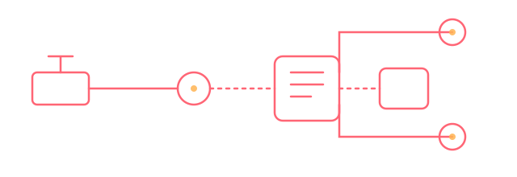

Codierung & Anpassung
Anpassung von Steuergeräte-Funktionen und Datensätzen an Fahrzeug- und Kundenanforderungen, inklusive sauberer Rückverfolgbarkeit.
Diagnose · Schulung · Volkswagen Konzern
Diagnose, Reverse Engineering und Steuergeräte-Codierung für Fahrzeuge des Volkswagen-Konzerns — VW, Audi, SEAT/CUPRA, Škoda, Bentley, Lamborghini. Dazu Schulungen rund um VCDS und VCP, mit aktuellem Schwerpunkt auf SFD, SFD2 und UNECE R155/R156.

LHTech ist seit 2016 auf Fahrzeugdiagnose, Reverse Engineering und Steuergeräte-Codierung für den Volkswagen-Konzern spezialisiert und bietet dazu praxisnahe Schulungen an — aktueller Schwerpunkt sind SFD, SFD2 und die UNECE-Konformität (R155/R156). Hinter LHTech steht Nils Wiesmann.
Zur Einordnung: Nils ist daneben als Angestellter bei Auto-Intern tätig, einem eigenständigen Unternehmen. vcds.de ist wiederum ein eigenes Projekt von Auto-Intern. LHTech ist von beidem unabhängig — kein Teil von Auto-Intern, keine Abteilung von vcds.de, sondern ein eigenständiges Kleingewerbe von Nils Wiesmann.
Alle Leistungen im Detail mit Preisen findest du in unserem Leistungsverzeichnis.
Anpassung von Steuergeräte-Funktionen und Datensätzen an Fahrzeug- und Kundenanforderungen, inklusive sauberer Rückverfolgbarkeit.
Begleitung und Durchführung bei Diagnose- und Programmierarbeiten an SFD-/SFD2-geschützten Steuergeräten über zertifizierte Zugangswege.
VCDS-/VCP-/ODIS-gestützte Fehlersuche und Fahrzeugdiagnose bei komplexen Problemen, ergänzt um Reverse-Engineering-Ansätze bei undokumentierten Steuergerätefunktionen.
Praxisnahe Schulungen für Werkstattteams zu VCDS, VCP, Diagnose und Reverse Engineering — mit aktuellem Schwerpunkt auf SFD, SFD2 und UNECE R155/R156, vor Ort oder remote.
VCDS und VCP sowie weitere Werkzeuge — jedes davon hat seinen eigenen Anwendungsbereich. Details auf der Werkzeuge-Seite.
Werkzeuge im Detail ansehenVon Diagnose und Reverse Engineering über SFD-/SFD2-Freischaltungen bis zu Schulungen — ein Einblick in typische Auftragsarten im Portfolio.
Portfolio ansehenDiese Website verzichtet bewusst auf Cookies und Tracking. Details in unserer Datenschutzerklärung.
Diese Website setzt keinerlei Cookies — auch keine technisch nicht notwendigen.
Keine Analyse- oder Werbe-Tools, keine externen Schriftarten oder Drittanbieter-Ressourcen.
Das Anfrageformular öffnet nur dein E-Mail-Programm — es werden keine Daten an einen Server übertragen.
Der Warenkorb im Leistungsverzeichnis speichert Auswahl ausschließlich lokal auf deinem Gerät.
Leistung auswählen und über das Anfrageformular unverbindlich anfragen.
Rückmeldung mit konkretem Angebot, Termin und Ablauf — der Vertrag kommt erst mit dieser Bestätigung zustande.
Codierung, Freischaltung, Diagnose oder Schulung — dokumentiert und nachvollziehbar.
Übergabe der Ergebnisse inklusive Rechnung — Details zu Zahlungsbedingungen findest du in unseren AGB.
Für Anfragen zu Codierung, SFD/SFD2, Diagnose oder Schulungen stehen wir gerne zur Verfügung — Details und Preise im Leistungsverzeichnis.
E-Mail schreiben